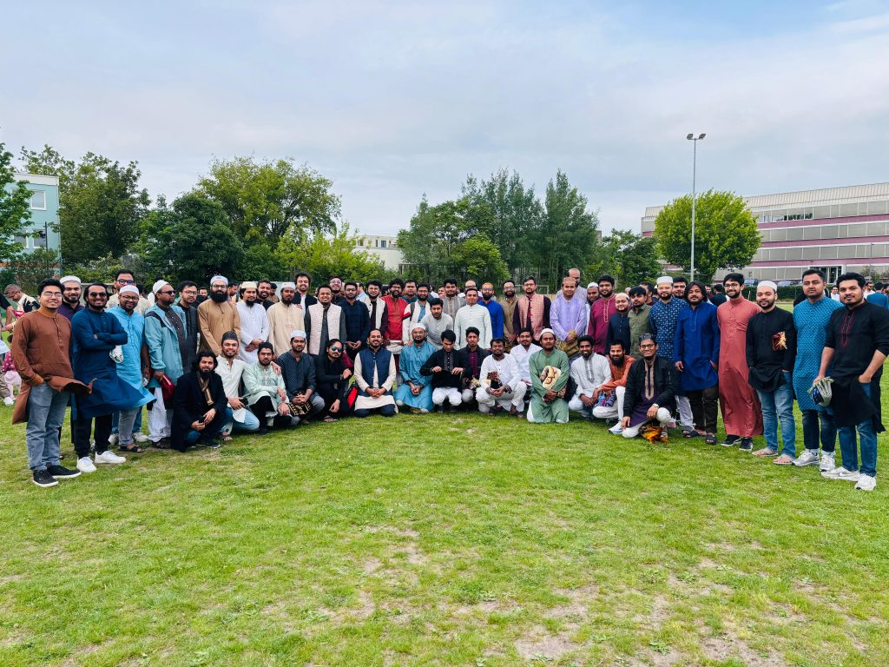
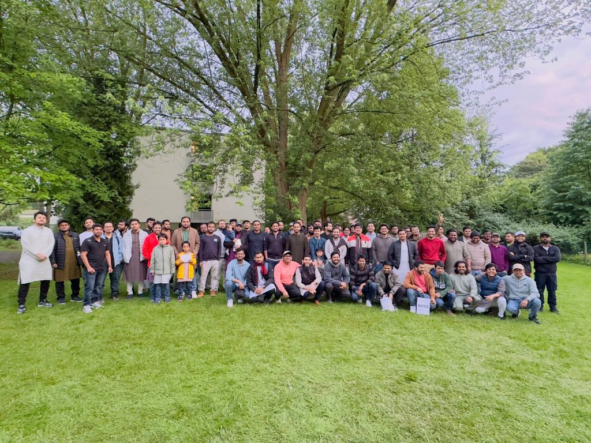
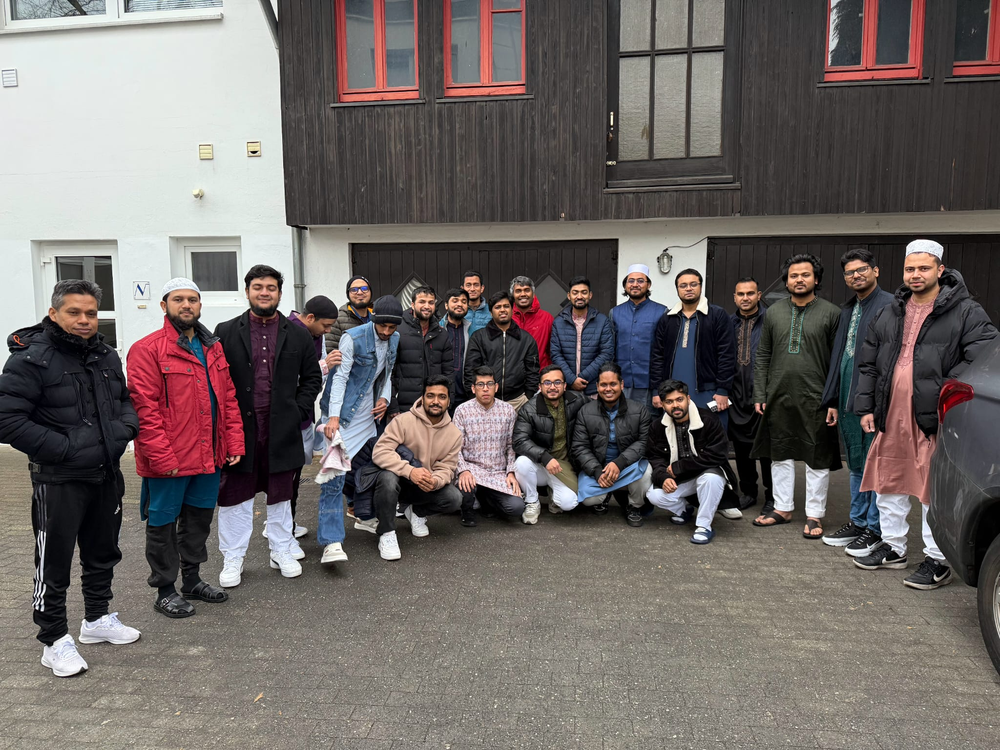
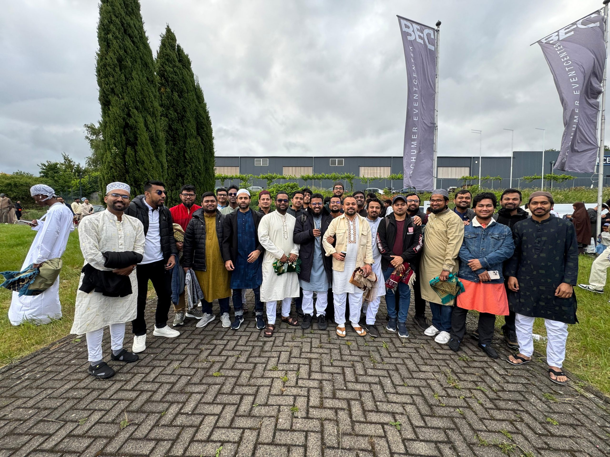
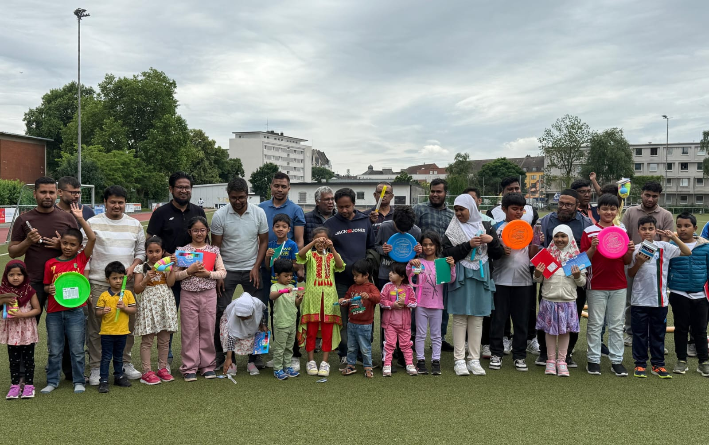

Zur Startseite
Galerie
Eindrücke aus Gebet, Sport und Begegnung
Diese Seite bündelt die lokal gespeicherten Medien der BMCAG und zeigt zentrale Momente aus dem Gemeinschaftsleben in einer klaren Übersicht.




